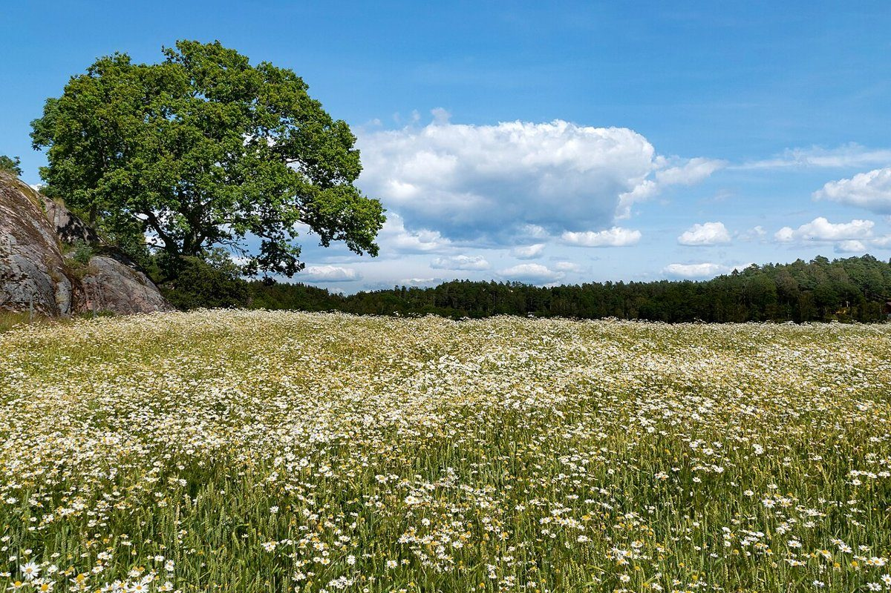

白鳥町で、ゆっくり立ち寄れるお店があったらいいなと思います。出かけた先で、ほっと一息つける場所になったらうれしいです。

口コミ
このページのコメントは、お店の実際の声ではなく、制作側が作成したイメージ例です。お店の情報が揃うまでの仮のコメントです。実際のお客様の声ではありません。
写真付きの案内が見られたら、行く前に楽しみが増えると思います。お店の様子が少しずつ分かっていくといいなと思います。
お店のInstagramで近況が分かったらいいなと思います。お出かけ前に確認できると安心です。
お店のことは、お電話またはInstagramでお尋ねください。